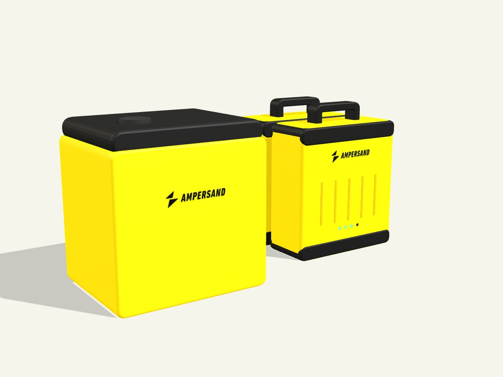

7years
Of fleet telemetry
We design our own battery management system (BMS), our own vehicle control and telematics unit (VCTU), our own cabinets and our own software. Seven years of telemetry from every bike, battery and station went into them.

Yellow layers are designed by Ampersand.
Our platform for every battery, station and bike: battery health, remote control and network planning.
In-houseVehicle control and telematics inside the pack: 4G, GPS, humidity, temperature and motion sensing.
In-houseThe Ampersand BMS controls charge speed and battery health, cell by cell.
In-houseHM1 and MK2 pack design. HM1 is built in Kigali.
In-houseAutomated 12-slot swap cabinet for MK2, with app payment.
In-houseLFP cells, selected by us for long life and safety.
Selected by Ampersandis the heaviest item in an MK2 swap. An HM1 pack weighs 44 kg and needs two hands. An MK2 pack is a one-handed lift.

Drag to rotatefirst life for our packs. Competitor batteries typically last two to three years.
Our electronics team designed the Ampersand BMS. It runs in every MK2 and in the HM1 fleet. We control every limit and every firmware release.
sensors and radios in one Ampersand unit, inside the pack.
AmperOps connects every bike, battery and station. We use it to place new stations, tune charging for each battery and set prices across the system. Each new rider and partner adds data that makes the network cheaper to build and run.

The MK2 vibration test equals about five years and 75,000 km of riding. HM1 and MK2 are UN38.3 certified and tested to ISO 18243.
| MK2 test | Result |
|---|---|
| Vibration | Passed |
| Water immersion | Passed · IP67 |
| Drop, 1 m | Passed |
| Shock and thermal shock | Passed |
| Short circuit, over-discharge, over-temperature | Passed |
Fewer replacements, lower capital cost per rider, and a battery that still earns in year four. Because we own the BMS and the VCTU, we see the health of every pack and can control it remotely.